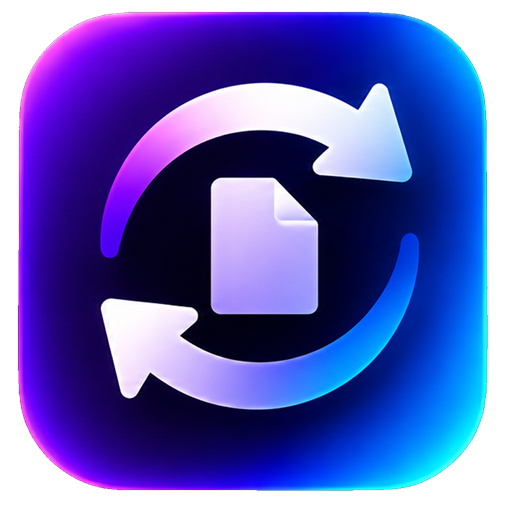
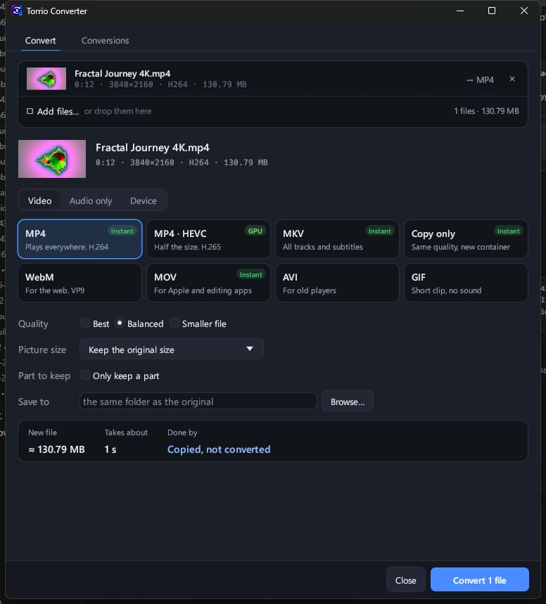

Free video converter for WindowsConvert in seconds, not minutes.
Torrio Converter uses your graphics card, and when a file only needs a new container it simply copies it. Your PC stays responsive the whole time.

The quick way to the right file
Pick a format card, see the size and time before you start, and get back to work.
Graphics card encoding
NVIDIA NVENC, Intel Quick Sync and AMD AMF, found by themselves. On NVIDIA the whole job stays on the card.
Copy, don't convert
A .ts that is already H.264 becomes an MP4 in seconds, with no quality lost. Sound that is fine is kept as it is.
Keep only a part
Drag two handles on a strip of pictures to cut the start and the end.
Ready for any device
Presets for phones, TV, WhatsApp (under 16 MB) and email (under 25 MB).
Size and time, up front
See how big the new file will be and roughly how long it takes before you press Convert.
Pause, queue, two at a time
Conversions run at low priority; pause one, run two at once, or shut down the PC when all are done.
Open it however suits you
Torrio Converter comes with Torrio and needs no separate install. It runs on its own: the download manager doesn't have to be open.
From Torrio's icon
Right-click Torrio's icon next to the clock and choose Convert files. The main window stays closed.
Its own desktop icon
Turn on its desktop or Start menu icon in Torrio › Options › Add-ons, and start it like any other app, with its own taskbar button.
Open with
Right-click video or music files in File Explorer › Open with › Torrio Converter. Your files keep their own default program.
Good to know
Is Torrio Converter free?
Yes. It comes with Torrio, which is free, with no ads and no account.
Do I need a graphics card?
No. Without one, the processor converts with fast settings. With an NVIDIA, Intel or AMD card that supports it, the card does the work.
Why do some conversions finish in seconds?
When the picture and sound are already right for the new format, Torrio copies them into the new file instead of converting them again, so nothing is lost and it takes seconds.
Which formats can it make?
MP4 (H.264 or HEVC), MKV, WebM, MOV, AVI and GIF for video; MP3, M4A, Opus, OGG, FLAC and WAV for sound, or the original sound copied as it is.